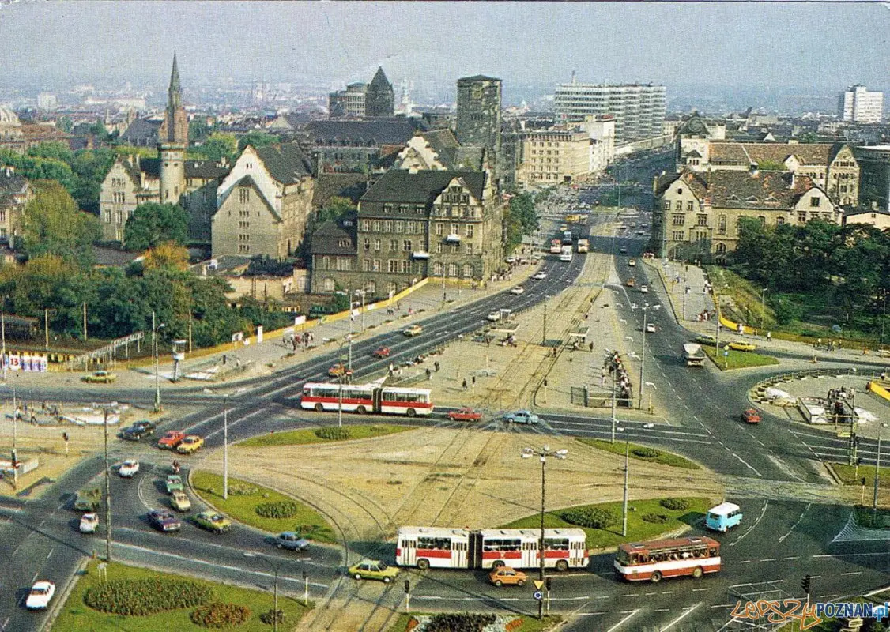
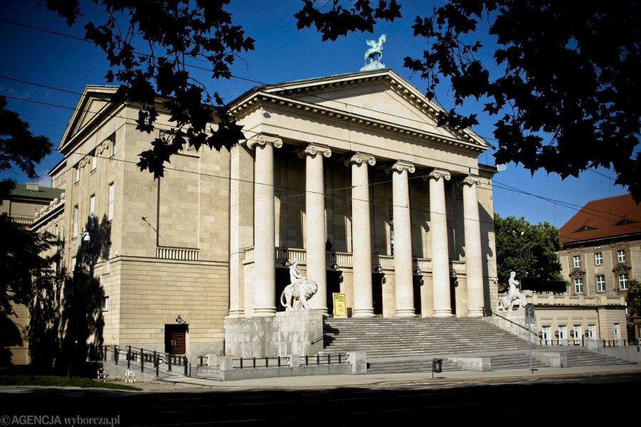
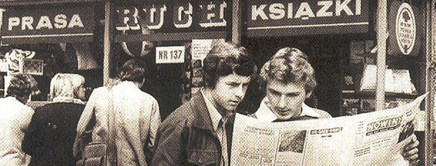

Назад - часть 1 | Оглавление | Далее - часть 3
Улица Вокзальная - прямой отрезок между зданием железнодорожного вокзала "Познань - Главный" и представительным "рондо" Коперника - обсаженная акациями с присыпанными сажей листьями - просторна и пустынна даже в рабочие дни. В этот воскресный дождливый полдень улицы Познаня были вовсе безлюдны. Тут и там виднелись лишь одиночные фигуры познаньцев, опасливо укрывающих от дождя свои воскресные наряды.
[Рондо Коперника - площадь или кольцевая развязка с обширными подземными переходами под ней]

Только один персонаж дерзко маршировал посреди холодной мороси. То была Аниэла Ковалик, которая прибыла в столицу Великопольскую второй раз, и настрой имела исключительно завоевательный. Дождик досаждал ей лишь тем что покрывал густой росой стёкла очков. Однако как только сняла их и убарла в карман, дождь мог дальше литься сколько хотел. Ни выцветшая футболка, ни застиранная джинсовая юбка, ни большой рюкзак, с клапаном, застёгивающимся на ремешок, не были чувствительны к влаге. Что до здоровенных рыбацких резиновых сапог, которые Аниэла сочла целесообразным надеть в тот день, то не могло быть обуви более подходящей к таким атмосферным условиям. Не говоря уж, что в такой только обуви Аниэла выглядела точно так, как хотела - а именно, как сиротка.
Первое, что сделала, покинув привокзальный район - спустилась в подземные переходы под рондо Коперника, где, как помнила по предыдущему июньскому визиту в Познань, были телефонные автоматы. Достала монетку из кармашка юбки, поправила лямки рюкзака и втиснулась вместе с ним в освещённую кабинку. Дрожа от эмоций, торжественно накрутила номер Павелка, и замерла прикрыв веки. Гудки...
– Алло? - послышался бархатный, наимилейший на свете голос.
Аниэла молчала, прижав свободную руку к ошалело бьющемуся сердцу. Мощный румянец покрыл её от стоп до головы. От волнения не могла произнести ни слова.
– Алло? - бросил Павелек ещё раз с интонацией, которая позволяла домыслить что еще через мгновение он положит трубку.
Аниэла с усилием совладала с собой. Уже хотела было отозваться, но внезапно снова почувствовала недостаток решительности.
Наконец нашла достойный выход из ситуации.
– Алло, это Кооператив Снабжения и Сбыта? - спросила, тщательно имитируя сухой голос скрупулёзной
бухгалтерши.
– Ошибка, - буркнул Павелек.
– Пусть пан менеджер не притворяется.
– Что? Ошибка, я же сказал пани.
– Знаю что пан притворяется. Что с тем транспортом?
– С транспортом? Ошибка! Ошибка, говорю вам!
– Там всё несвежее пришло. Мы вам обещаем последствия!
– Кто обещает? Пани звонит по неверному номеру!
– Так пан признаёт, что они были несвежие?
– Да это частная квартира!
– А, ну извините.
– Ну наконец-то.
– Я отняла у пана столько времени...
– Ну да.
– А чем пан занимался, когда я позвонила?
– Я ем полдник, - рек Павел весьма сухо, - Пани позволит мне закончить разговор. До свидания.
И положил трубку.
[у поляков нет обращения на "вы" - вместо этого вежливой формой является обращение в 3-м лице с прибавлением "пан/пани"]
Сияющая Аниэла вышла из подземного перехода к гостинице "Меркурий". Там стояли сверкающие автомобили с заграничными номерами, а также очередь местных жителей на остановке, у которой не было такси. Под полосатыми зонтами на террасе кафетерия при гостинице сидели красивые девушки с внешностью, как из журналов, и состоятельные господа, на вид - западноевропейские.
Аниэла стояла на краю тротуара со своим полинялым рюкзаком. Выражение оглушённой счастьем влюблённости медленно исчезало с её лица, уступая место наползающему туману несмелости. Впрочем этот туман не был частым гостем под этими очками.
– Э, ну посмотрим, - муркнула себе под нос Аниэла. Поправила врезающиеся лямки и посмотрела победоносно вдоль улицы Рузвельта.
По улице той неслись легковые автомобили и лениво ползли трамваи зелёно-жёлтой раскраски. Как только дождик унялся, выбрались на тротуары познаньцы, типичными воскресными семейными группками. Характерная черта таких групп - пачки печенья, которые несут держа за дно или на верёвочке, отцы и дедушки, а также нарядные дети, которых тянут за руки нарядные мамы и бабушки. В том году такими познаньскими семейными группками овладела страсть к джинсовой одежде из Pewex, отличавшейся изысканным фасоном и ужасающей ценой в долларах. [Pewex - сеть магазинов продававших импортные товары только за доллары, вроде советской "Берёзки"]. Джинсовая одежда, дорогая и облагораживающая, носимая с надлежащей бережностью и уважением. На этом фоне Аниэла Ковалик со своими резиновыми сапогами и рюкзаком выглядела живописно и беззаботно - и так же себя чувствовала. Не замечая критических взглядов со всех сторон, маршировала себе, пока не добралась до Театрального моста. Дальше в продолжении улицы Рузвельта виднелась вереница больших каменных домов, занимающих всю левую сторону улицы. Были то дома красивые, украшенные лепниной, барельефами и орнаментами, радующие своими благородными линиями глаз пешехода 20 века.
Не их красота, однако, вызвала целую серию чувственных взглядов, какие Аниэла бросила в ту сторону. То же чувство вызвали бы и однообразные блоки жилого комплекса имени Великого Октября, если бы в каком-нибудь из них жил Павелек.
А жил он, очевидно, в тёмно-сером здании с белыми архитектурными гирляндами вокруг окон - поскольку оно было пятым в ряду.
[здание Оперы в Познане]

Мост Театральный, параллельный Вокзальному, переброшен над десятком железнодорожных путей. Заканчивается он в зелёных зарослях, являющихся частью маленького парка или сквера, называемого в народе "Театралка". Справа узкий, тенистый отрезок улицы Сталинградской выходит к зданию Оперы с потемневшим Пегасом на коньке крыши. От улицы Александра Фредро сбегает к Театралке довольно крутой газон, который зимой превращается в наипопулярнейшую в Познане ледовую горку. Скверик, поросший вытоптанной травой, оснащённый песочницами и лавочками, с трёх сторон ограждают высокие сочно-зелёные стены огромных каштанов. В глубине, за каштанами, кроются за заборчиками старые частные дома одинакового грязно-серого окраса, который вызван смесью пыли десятилетий и сажи от бесчисленных поездов проезжающих неподалёку.
Спуститься в скверик можно по каменным ступенькам, либо обогнув газетный киоск "Рух", оказаться на гравийной дорожке. Оба эти пути, однако, были слишком уж банальны на взгляд Аниэлы. Она сбежала прямо по откосу газона, по инерции пронеслась через отрезок порыжелой травы и резко затормозила у самой обочины.
[RUCH - "движение" - сеть распространения печатной продукции, существует до сих пор]

Перед ней вырос небольшой двухэтажный домик, чей тёмный фасад разнообразили красными пятнами цветущие на балконе пеларгонии. Повыше балкона, в открытом окне чердака сушились две голубые детские футболки, четыре пары маленьких носочков, а также нанизанные на нитки грибы.
Из-за грибов доносился мужской голос, с чувством напевающий песенку под названием "Sing-Sing", аккомпанируя себе ритмичными металлическими постукиваниями.
Голос тот принадлежал Мамерту Ковалику - тридцатитрёхлетнему хирургу, отцу двух детей и мужа тридцатилетней пианистки по имени Тося. Мамерт сидел на кухне, пил сливовый компот, стучал ложечкой по блюдцу и смотрел на свою милую жену и на своих милых детей - они втроем сидели на полу и играли в настольный хоккей.
[Мамерт(ус) - редкое католическое мужское имя]
В целом воскресенье удалось. До полудня Ковалики ездили по грибы в лес у деревни Зелёнка, вернулись поездом около двух, нажарили маслят и съели с хлебом. Теперь день клонился к спокойному завершению; Мамерту даже не нужно было спешить в больницу на обход, ибо как раз не случилось никаких новых пациентов, а ординатор уехал на неделю в Прагу. Казалось что вечер должен пройти без каких-либо происшествий.
Едва Мамерт так подумал, в дверь кухни тихонько постучали.
– Прошу! - отозвался он.
Двери скрипнули и вошла навьюченная рюкзаком Аниэла. Улыбнулась лучезарно и обнадёживающе. Огляделась по цветастому интерьеру маленькой кухни. Увидела сидящего за столом усатого рыжеватого долговязого человека, который каким-то неуловимым выражением строгости, а также формой типично Коваликовского носа, напомнил ей отца. Узрела также сидящую на полу округлую невысокую блондинку с весёлыми голубыми глазами, склонную к полноте. Путались там также и какие-то дети, которые однако ничем необыкновенным не выделялись, а потому Аниэла не обратила на них внимания.
– День добрый, - сказала, - ну а вот наконец-то и я!
– Тосю, - рек Мамерт жене, - а вот наконец и та пани. - Был уверен, что раз он не имеет понятия, о чём эта девица
говорит - то значит об этом знает его жена. Вариант наиболее близкий к истине, а именно, что ни он ни Тося не имеют
понятия о намерениях этой худенькой девочки в очках, не пришёл ему в голову.
– День добрый, - откликнулась Тося вставая с пола и массируя круглое колено. - Эээ... Пани приехала к нам?
– Ну, да! - ответила Аниэла тоном, как будто это само собой разумеется.
– А... по какому поводу?
Аниэла превзошла мастерством саму Элеонору Дузе.
– Как это "по какому поводу"? - переспросила с мягким упрёком, после чего как бы в проблеске догадки добавила: - Ах, Ну, ясно! Видимо, письмо от отца к вам не дошло!
В этот момент Мамерт с Мамертовной выразили растущую заинтересованность. Что до Мамерчат, они бросили игру и подошли едва не под нос Аниэлы, разглядывая её как чудо природы.
– О! Прекрасные дети! - с восторгом воскликнула Аниэла, несколько преувеличивая. Тося и Мамерт выглядели смущённо. Комплимент был шит очень уж грубыми нитками. Дети Коваликов были безусловно сообразительны, симпатичны и не лишены даже некоторого детского обаяния, однако же никто, даже влюблённая в них мать, не отважились бы назвать их прекрасными. Пятилетняя Ромча была плоским, косоглазым существом с костистыми коленками и жёсткими волосами конопляного цвета. Томчо - лет шести с половиной - рыжеватый мыслитель, с привычкой грызть ногти, лишённый вследствие падения с велосипеда двух верхних передних зубов - имел веснушчатое треугольное лицо с выражением решительным и рассеянным одновременно. Оба были одеты в полосатые футболки и красные шортики. Оба имели изрядно ободранные колени. Кроме того, вследствие нескольких часов проведённых в смоченном дождём саду, они были ужасно, компрометирующе грязны. Воцарилась минута неловкой тишины. Аниэла осторожно ждала кто первым нарушит молчание и что это будет за вопрос. Первой оказалась Ромча:
– А у божьей коровки есть уши? – спросила она, целясь пальцем в Аниэлу.
Удивлённая Аниэла присмотрелась внимательнее к существу, вставшему тут перед ней, сурово ожидая ответа. У Ромчи были голубые глаза - и она водила ими холодно и объективно по лицу гостьи.
– Не знает, - буркнул Томчо, тыча сестру локтем, - Я так и думал.
От ответа очевидно могло многое зависеть. Аниэла решилась в один миг.
– Нету у божьей коровки ушей, - ответила твёрдо, - И она о том нисколько не жалеет. Когда бы у неё были уши, её замучил бы шум самолётов.
Дети переглянулись.
– Хорошо сказала.
– Хорошо. Симпатичная, в очках.
– И щурится.
На их маленьких лицах медленно проступало выражение одобрения.
– Отъезд, деточки! Идите-ка и выпейте наконец своё молоко, - вмешался Мамерт. - Милости просим, - повернулся
он к Аниэле, - присаживайтесь и расскажите нам всё в подробностях.
– Дядюшка! - вдруг воскликнула Аниэла, внезапно бросилась Мамерту на шею и громко расцеловала его в обе щеки.
Мамерт сразу разозлился.
– Да что происходит?! - крикнул он голосом, так сильно похожим на голос её отца, что Аниэла едва не рассмеялась.
– Тётушка! - воскликнула она, падая в круглые руки Тоси.
– Привет, - сказала Тося и фыркнула со смеху, - просим разъяснений.
– Моя фамилия Ковалик, - разъяснила Аниэла.
– Забавное совпадение, - признал Мамерт.
– Никакое не совпадение, - радостно воскликнула Аниэла, - Пан является моим дядей!
– Чепуха, - заявил Мамерт, - Никтогда в жизни я не являлся ничьим дядей!
Подошёл Томчо.
– Почему я так ненавижу молоко? - спросил с внезапным доверием, беря Аниэлу за руку и вимательно глядя ей в глаза.
– Может потому, что оно очень питательно, - объяснила ему Аниэла.
– А, это может, - согласился паренёк. Аниэла понимающе улыбнулась Мамертам и, внезапно хлопнув себя по лбу,
воскликнула, - О, напрочь забыла! Папочка передал дяде гостинец! - порылась в рюкзаке и извлекла некий длинный
свёрток в промасленной бумаге.
– Какой Папочка? - спросил Мамерт с полным спокойствием. В этом он разнился с отцом Аниэлы. Отец Аниэлы никогда и
ни в каких обстоятельствах не смог бы так эффективно побороть раздражение. "Хирург - он хирург и есть" - подумала
с уважением Аниэла, и пояснила:
– Йюзеф Ковалик. Сын Вероники и Яна. Живёт в Лебе. Рыбак морского промысла.
– Йюзек! - обрадовался Мамерт, - Ну и дела! Юзек - твой отец?! Я его в последний раз видел сто лет тому, на
свадьбе нашей тётки. Ух мы тогда, и... гм... То есть, хорошо мы тогда повеселились.
– Ну, да, вот Йюзек и есть мой папа, - закончила Аниэла, - Прошу, это угри! - вручила свёрток Тосе.
Хозяйка дома в один миг избавленная от рыночных сложностей и хлопот, выразила энтузиазм.
– Какие красавцы! - воскликнула, высыпая угрей на блюдо. При виде их здоровой упитанности Мамерт, кормящийся
длительное время паштетом из птицы и жёлтыми сырами со вкусом резины, впал в радостный восторг.
– Вот это здорово! Каждый день свежие рыбки! Может надо было и мне стать рыбаком, Тося! Это профессия при которой
можно себя прокормить, не то что хирургия.
– Я слышал о человеке который съел у другого поджелудочную железу, - вставил Томчо как ни в чем не бывало.
– Это ты пожалуй ослышался, - возразил его отец.
– А где поджелудочная железа? - в то же время хотела знать дочка хирурга.
– Папа, а у меня нет поджелудочной железы.
– Как жаль что письмо отца не дошло, - Аниэла вернулась с напором к наиважнейшей для себя проблеме, - Боюсь что
тётя теперь будет озадачена.
– Зови меня по имени, - предложила Тося, - Чем я буду озадачена?
– Ну, тем, что я хочу тут у вас остановиться, - поведала сладко Аниэла, взмахом руки обводя жилище Мамертов.
Тося помолчала немного, наконец улыбнулась и тихо сказала:
– Пожалуй, я озадачена.
– И я тоже, - рек Мамерт.
– Я, пожалуй, больше, - добавила Тося.
– Даже не знаю, - задумался Мамерт, - Может на одну ночь удалось бы что-то придумать... У нас есть гамак. Можно бы
его растянуть в коридоре, около ванной.
– Тётка Лиля, - сказала Тося.
– Ну, а что тётка Лиля?
– А кто это, тётка Лиля? - спросила Аниэла, моргая чёрными ресницами с идеальным выражением беспомощности.
– Как твоё имя? - спросил Мамерт.
– Аниэла.
– Ну вот, Аниэлко... Дом, в котором мы живём, это собственность тётки Лили. Мы снимаем у неё этот кусочек чердака.
Тут у нас кухонька и и комната, весьма тесная, в которой живём мы четверо.
– Понятно, - поняла Аниэла. - А тётка Лиля - она тоже из Коваликов?
– А нет, - ответил Мамерт, - Не из Коваликов. Она тётка Тоси. Так что не расчитывай на чувство клановой солидарности.
– Тётка Лиля бесценна, - сказала Тося оборонным тоном, - Только здесь уж нигде нет свободного угла. Тётя сдала
в аренду все что было возможно.
– Ну, если бы тётя захотела пустить Аниэлку переночевать у себя...
– Перестань, Мамерче. Не стоит даже просить.
– Ну, да, верно.
– Но попробую с утра с тётей поговорить. Может чего-нибудь решим.
– Ну, попробуй, Тосю, попробуй.
– А что собственно привело тебя в Познань, Аниелко, - спросила Тося, усаживая гостью за стол, и наливая
сливового компота.
– Первого сентября начинаю учиться, - объяснила Аниэла. - Без науки никуда. Так что можно сказать, привела
меня сюда жажда знаний.
В тот вечер Мамерчатки были отправлены по кроваткам раньше, чем обычно, хотя и задыхались от протестов, желая общества новой и многообещающей тёти Аниэлки. Выкупанные, очаровательно чистые и розовые, пахнущие ромашковым мылом, и клубничной пастой для зубов, оставили на щеках Аниэлы по сочному поцелую и с сожалением в сердах удалились на покой.
Тося со вздохом облегчения закрыла за ними двери комнаты и приготовила плотный, трудноперевариваемый ужин с угрём. Потом погасила верхний свет и включила старомодный телевизор стоящий на холодильнике. Мамерт, несчастный продукт эпохи, не мог есть ужин без просмотра "Вечера с Дневником" [так называлась программа новостей в Польше в то время]. Поскольку, однако, за тонкой стенкой в соседней комнате лежали дети, на которых в ту пору обычно снисходил сон, облегчающий существование родителей, звук в телевизоре традиционно был выключен, пока Мамерчатки окончательно не уснут. Мамерт сидел поэтому тихо перед мигающим экраном, ел, пил, смотрел на меняющиеся изображения залов заседаний и свекольных полей, и пытался угадать по лицу диктора, не произошло ли чего-нибудь устрашающего.
Тося тихо и ловко суетилась по маленькой кухоньке, скошенный деревянный потолок которой мог бы выглядеть на западноевропейский манер, когда бы не портящее весь эффект количество мебели, собранной под ним. Амбициозная хозяйка старалась, правда, привести внутренность кухни до известных ей по журналам капиталистических образцов - то развесив под потолком косицу из чеснока, то собирая у окна занавески в складочку, а то ставя на столе изысканный деревенский букетик - однако же единственное что пока ей удалось достичь - было ощущение бедного уюта.
За узкими дверками в комнату понемногу стихли шёпот и хихиканье - а с ним и поскрипывание железных кроваток. Ещё до ужина Мамерт заказал срочный междугородный звонок в Лебу, потому что хотел поболтать с вновь обретённым кузеном и уведомить его что Аниэла успешно добралась и находится в безопасности под их крышей. Не обратил внимания на выражение лица гостьи - Аниэла дала бы всё что имела, лишь бы Мамерту не удалось связаться с Лебой. Поскольку отец не имел ни малейшего понятия, что она посетила Мамертов - и ясное дело - не был посвящён в её дальнейшие планы.
После прогноза погоды за дверями утихло. В то же время снизу, в холле, раздался звонок телефона.
Мамерт побежал вниз, а Аниэла принялась грызть ногти.
[напомним, что в те времена междугородные звонки нужно было заказывать заблаговременно - когда телефонисты в двух городах устанавливали связь по цепочке междугородных кабелей, они звонили абонентам на обоих концах и подсоединяли их к этой "цепочке"]
– Алло! - кричал Мамерт в трубку, - Алло, это ты, Йюзек?
– Пжжбжжпж, - пришёл ответ издалека.
– Что?!
– Пжжбжжпж, пжжбжжпж! Пжжбжжпж!
– Пожалуйста, перекрутите через ноль! - попросил Мамерт вежливым голосом.
– Сам ты перекрутись, - предложила трубка.
– Ну наконец-то! Это ты, Йюзек?
– Нет, то не я, - ответил хриплый, бесполый голос в эфире. - То есть значит я, а не Йюзек. Йюзек в море.
– А с кем я разговариваю?
– А я? – подозрительно поинтересовался голос в трубке.
– Говорит Мамерт Ковалик.
– Ага.
– А кто, извините, у телефона? - не уступал Мамерт, хотя с некоторым отчаянием догадывался что плодотворного
разговора не выйдет.
– Курка, - пришёл усталый ответ.
– Пани Курка?
– Пан Курка, тьфу!
Мамерт почувствовал раздражение.
– Проше пана. Речь о том, что дочка Йюзека у нас. И если пан позволит...
– Алло? - нежным голосом вмешалась телефонистка в Лебе, - Вы ещё говорите?
– Говорим. Разное бывает, пан Курка, дети убегают из дому, пан понимает. Хотел бы знать, что Йюзек об этом думает.
– Аниэла выехала, - прервал пан Курка, - Нету дома Аниэлы, пани выехала.
– Вы разговариваете? Алло, разговариваете?
– Разговариваем. Пан Курка, я знаю что выехала, я спрашиваю, знает ли об этом Йюзек.
– В Познань поехала. В Познань, пане. Пусть пан звонит завтра как Йюзек вернётся! - занервничал уже пан Курка. - Я
тут ещё должен ему спинку потереть. До свидания.
– До свидания, - согласился Мамерт. Пан Курка задержался еще на мгновение от того чтобы положить трубку:
– Так что, пан, завтра позвонишь?
– Возможно, - согласился Мамерт, - Возможно. Доброй ночи, пан Курка.
– Аниэлка, что ты мне за номер дала? Кому там пан Курка спинку должен потереть? - хотел знать Мамерт, возвращаясь на кухню с импульсивностью, характерной для Коваликов.
Аниэла, почувствовав облегчение, искренне засмеялась.
– Пан Курка это наш сосед снизу, - пояснила она, - Он временами приходит к Филипу, бедный пенсионер.
– Тот Филип?
– Нет, Курка. А Филип, хм, это мой единокровный брат, ему полтора года.
– А Курка?
– А Курка это бедный пенсионер. Он получает от нас несколько грошей. Так говорит Марылка.
– А Марылка это кто? - устало спросила Тося.
– Марылка это моя мачеха, - поведала Аниэла с тяжким вздохом. - Милая девушка. Ей двадцать лет.
Мамерты переглянулись и смотрели друг на друга довольно долго.
– Всё ясно, - пробормотала Тося, подавляя в себе порыв сочувствия, подвигающего её всегда к непредсказуемым
поступкам.
– У Марылки не хватает времени даже для ребёнка, - тихо продолжала рассказ Аниэла, - на рыбзаводе ей приходится
работать в две смены.
– Зато пану Курке перепадает неплохая сумма, - трезво оценила Тося.
– Не очень-то, - опустила ресницы Аниэла, - Вообще Марылка не расточительна. Я занималась Филипкем от рождения.
– Ах так, - мягко сказала Тося. С минуты на минуту таяла её настороженность по отношению к нежданной гостье. - Ну что ж, распакуй свой рюкзак, Аниэлко, а мы тебе сейчас развесим гамак.
В углу кухни, на полу, уложила Аниэла содержимое своего рюкзака. Главным образом это были книжки. Что до гардероба панны Ковалик, он был более чем скромен: залатанная рабочая блузка, два свитерка низкого качества и потёртые штаны из голубой замши. Никаких туфель - рыбацкие сапоги были единственной обувью бедной сироты. Тося занималась изучением этого безобразия, когда в кухню вошёл Мамерт.
– Ну, гамак висит, девочка пошла мыться, - сказал он. Увидев выражение лица жены удивился, - В чем дело?
– У меня ужасное впечатление о твоей родне, - заявила Тося, надув розовые губы, - Не могут даже ребёнку купить
ботинок - это просто бросается в глаза!
– Да, Йюзек, видимо, не преодолел тягу к бутылке, - согласился Мамерт с несколько лицемерным сожалением, -
помни, ты собиралась завтра поговорить с тёткой Лилей.
– Видишь, - вздохнула Тося, - Грустная жизнь у ребёнка.
– О, да, бедная малышка.
– Наверное, пережила ужасные времена с этой мачехой.
– Наверняка. Я даже думал, не сбежала ли она попросту из дому. Но нет, пан Курка знает о её отъезде.
– Интересно, знает ли о том и её отец.
– Да! Нужно будет ему написать. При оказии. Сделай мне, жено, чаю. В горле пересохло от тех угрей.
Всё идёт по плану, - триумфально размышляла Аниэла, пуская гамак в мягкое покачивающееся движение. - Воистину любопытно, что люди проглотят любую байку, если её подать правдоподобно, - улыбнулась с некоторым превосходством. Из-за двери кухни доносился приглушённый разговор и тихий смех, заглушаемый звуками бурной сонаты, которую на первом этаже играли чьи-то не очень умелые пальцы. Справа шумела вода в трубах ванной. Из-за спины, над головой Аниэлы, лились через окошко выходящее на крышу далёкие звуки улиц большого города. В моменты когда сумасшедшая пианистка с нижнего этажа делала перерыв (наверняка для того - думала Аниэла - чтобы рвать волосы с головы), яснее можно было слышать стук капель разбивающихся о жестяной парапет окошка.
Снова дождь проходил над Познанем.
Аниэла не могла заснуть, несмотря на усталость. Чужие звуки и запахи чужого дома вселяли в неё неотчетливое беспокойство. Покачивалась легко в своём гамаке, лёжа на спине, с руками подложенными под голову, и смотрела на свою тень, движущуюся по стене. Думала о дожде.
Тот же самый дождь стучит в этот момент по всем окнам в городе. Слышно наверное его и в таинственных закутках каменных домов на улице Рузвельта. Павел, быть может, тоже лежит сейчас без сна. Может смотрит телевизор, может читает. А может пишет письмо в Лебу, до далёкой Аниэлы Ковалик, и даже не догадывается что она так близко - буквально на соседней улице.
Ах, чудесный, желанный, единственный на свете... Ах, для него, для него... для него спрыгнула бы даже с башни ренесансной ратуши. Для него готова была на самые далеко заходящие лишения и жертвы. Это ради него устроила целую сложную интригу с Лицеем Полиграфичным. Это для него подвергается теперь хлопотам и унижениям. Достаточно было одного его письма - того, первого - чтобы впала в пропасть отчаяния. Достаточно было одного письма - того, второго - чтобы решилась в один момент что дальше грызть гранит наук будет в какой-угодно школе, лишь бы она была в Познане. Просматривая справочники наткнулась на упоминание о Лицее Полиграфичном. Это было в самый раз! Во всей северной Польше не было ничего в этом роде. А значит был отличный повод отправиться именно в Познань.
Что правда, сама мысль о полиграфии вообще вызывала у Аниэлы судорогу челюсти, как при подавленном зевании, но утешала мысль, что благодаря Провидению, уготованная ей школа хотя бы не оказалась Мясным Техникумом. И начала убеждать отца что мечтает о профессии печатника.
Отец был решительно против. Разъяснил, что место Аниелы в лицее в Леборке, за двадцать два километра от Лебы, а не на краю света. Добавил что если Аниела поступит по своему, может вообще не показываться в доме и не отзываться до собственного отца. А уж тем более пусть не расчитывает на его поддержку.
Все эти препятствия были пустяковыми. Не существует препятствий для настоящей любви. Как и раньше, всё вокруг благоприятствовало подтверждению этого тезиса.
Аниэла вздохнула всей грудью, переполненая чувством роскошного самоуничижения, и снова подтолкнула гамак в движение.
Состояние тяжелой влюблённости было без сомнения очень приятным. А наиприятнейшей было сознание, какую премилую неожиданность она устроит Павелку, когда заявится в конце июня в Познань и сообщит ему, что теперь они будут вместе, всегда вместе, вместе как минимум на четыре года...
Но в конце июня Павелек оказался на каникулах. В июле, когда он бездельничал в лесничестве, Аниэла работала сдельно на рыбоперерабатывающем заводе в Лебе и заработала около тысячи злотых на первые расходы в Познани. Не могла расчитывать на отца в плане финансовом, поскольку властный родитель дулся на неё и упорно твердил что не намерен нести расходы за её капризы.
[средняя месячная зарплата по тем временам - десять тысяч злотых]
Потом пришёл август и наконец вот она в Познане. Всё пошло как по волшебству. Теперь можно будеть видеться каждый день, забегать друг к другу на послеполуденный чай, ходить в кино, на дискотеки, в Оперу (обязательно на "Женитьбу Фигаро") и в театр, ах, в театр! Близость театров была упоительной. Как знать, может быть настолько же упоительной как и осознание что Павел тоже близко.
Всего в двухста метрах отсюда - Театр Новый. Одна остановка до Театра Польского. Опера - на другой стороне улицы. Театры студенческие. Везде побываем, конечно, с Павелкем.
О, очень хорошо, что не ответила на два его письма. Было ей это нелегко, но каждый день тешила себя представлением о приятном сюрпризе, который ждёт Павелка в августе, а также убеждала себя, что наиболее ценны вещи трудно доступные, и этот принцип касается не только ветчины, но и девичьих чувств.
Но теперь - теперь можно бы уж вроде отступить от тех принципов. Ибо откуда Павелек мог бы знать что она уже здесь? Время для сюрприза!
"Завтра, с самого утра, - подумала Аниэла, - позвоню ему. Автомат есть на Театральном мосту".
А вообще, к чему бегать на Театральный мост? Телефон есть и здесь, в холле внизу. И собственно, зачем ждать утра? Который час? Без десяти одиннадцать...
Ох, Павелек... Что он скажет, услышав её голос? И как бы тут начать разговор... Из автомата на рондо Коперника звонить ей было ужасно. Во-первых телефонная будка в общественном месте не благоприятствует разговору интимным шёпотом. А во-вторых, Аниела смутилась и на самый звук его голоса сердце её стало работать с перебоями. Теперь следовало получше обдумать, что сказать. "Начну так: добрый вечер, Павелку, это я... - думала Аниэла в счастливой суете нащупывая ногой пол рядом с гамаком, пытаясь найти свою обувь. - А он на то: Аниэлка! Наилюбимейшая! Это ты?!" - её воображение уже не справлялось с тем, что будет дальше. Не могла найти в полумраке ни одного из сапог, выскочила из постели босиком, в одной только пижаме, бросилась вниз по ступенькам.
– Алло?! - спросил Павел, сразу после того как прозвучал первый гудок.
Аниэла почувствовала, что её бросает в жар. Сердце загадочным образом затрепетало в груди и потекло в сторону пищевода. Откашлялась.
– Добрый вечер... - промолвила, - Это я... - получилось очень тихо.
– Алло! - повторил Павел в трубке. - Пожалуйста, громче, а то не слышно!
– Добрый вечер! - сказала Аниэла, тратя массу энергии на регулирование подходящей громкости голоса. Не хотела, чтобы
в доме услышали её разговор. - Добрый вечер... это я.
– А, узнал! - засмеялся Павел, - Кооператив Снабжения и Сбыта, да?
Получилось так неожиданно, что Аниэла растерялась. Почувствовал как будто кто-то спихнул её пинком с розового облака, на котором она плыла под звёздами под звуки хорального пения. В ушах сдавило, и она услышала шум собственной крови, прокачиваемой с усилием через несчастное сердце.
– У пани милый голос, - поведал Павелек соблазнительным тоном, - Я запомнил его очень хорошо.
"Ах, вот как! - крикнуло что-то в голове Аниэлы, - Флиртует с бухгалтершей, наверное и на приём решит записаться!"
– Чем пани занята в такое время? Опять ищет пани своего менеджера?
– Ыхы, - выдавила утвердительно Аниэла, не в состоянии придумать что-нибудь, что помогло бы выкарабкаться из
этой идиотской ситуации.
– Восхищаюсь, правда - пани такая ответственная.
– Служба не дружба, - буркнула Аниэла, неохотно входя в роль. Не имела другого выхода, кроме как положить трубку,
а на то недоставало ей силы воли.
– Мне любопытно, - продолжал Павелек плавно, - что было в том транспорте?
– Филе скумбрии в панировке, - выдала Аниэла без раздумий, - Пятьсот тонн.
– Ухм. Наверное здорово пахнет, если несвежее.
– Точно, - тупо ответила Аниэла, которая не имела настроения для дальнейших шуток.
– Ну хватит, - сообщил Павел, совершенно другим тоном, - А теперь перестань дурачиться и расскажи, когда приехала.
Тогда я дал себя одурачить, но теперь узнал тебя сразу.
Ох!!!
А вот оно как!!! Узнал её сразу!!!
Хоральное пение возобновилось в ушах Аниэлы, а внезапная радость забросила её кувырком обратно на розовое облако.
– Павелку... - шепнула она.
– Гм? - спросил он таким тоном, что Аниэлу пробрала дрожь.
– Я... приехала сегодня...
– Очень хорошо. Когда увидимся?
– Когда захочешь...
– Ну, тогда завтра. Помнишь, обещала мне рассказать всё в подробностях.
Правда, обещала? Аниэла не могла припомнить, чтобы обещала ему что-нибудь в этом духе.
– Я завидовал тебе все каникулы. Не каждому родичи устраивают что-то подобное. Видела Версаль?
Версаль? Какой Версаль? Что, на милость Божью, это могло значить? Голос Павла завибрировал внезапно знакомым теплом.
– Ну, значит завтра в одиннадцать, как обычно. Хорошо? Ну, привет, Дануська!...
Дануська???
Со свистом в ушах Аниэла падала среди звезд. "Чудовище, чудовище, предатель" - думала она, героически играя роль до конца.
– Хорошо, в одиннадцать... - сказала, - А как там твои каникулы?
– Нормально, - содержательно поведал Павел, в одном слове заключая целую историю великой любви Аниэлы Ковалик. -
Ну это, ясное дело, ерунда по сравнению с твоей поездкой во Францию.
– А... как там было в Лебе? - продолжала допытываться Аниела, неясно надеясь, что Павел вспомнит о ней, что вот
сейчас он скажет ей, то есть Данусе, что встретил на каникулах наипрекраснейшую девушку, что влюбился, что
расстаётся, что...
– В Лебе? - спокойно удивился Павелек, - Нормально было.
– Не познакомился ли, - выдавила через стиснутые зубы Аниэла, - Не познакомился там с какой-нибудь местной
красоткой?
– Ничего подобного. Что тебе вообще в голову взбрело?
– Так, всякое, - сказала Аниэла. Слёзы дрожали в уголках её глаз, - Ну до завтра. - Бросила трубку. Чувствовала что
ни секунды больше не выдержит этого кошмарного разговора. В сердце её как будто вонзилось холодное острие, колени
дрожали, а из очей текли потоки слёз которые не могла уж сдержать.
Аниэла плакала редко, но уж если - то жестоко, навзрыд. Стуча зубами от холода и нервного напряжения, добрела до своего гамака, вползла под одеяло и заревела от всего сердца.
Так у Павла была девушка.
Девушка по имени Дануся.
Разъезжает по Парижам, светская этакая дама. Имеет привычку приходить к нему в 11 по утрам.
А всё же она ему безразлична, он её не любит. Что-то подсказывало Аниэле, что это попросту невозможно. Эта Дануська - просто недоразумение.
Наверное в Лебе уж дожидается очередное красивое письмо от него. А значит с утра надо послать телеграму домой. Обязательно.